Symõknã
The lands of Symõknã have long been shrouded in smoke. Rumours had it that the people who lived in this land were gone for good cause of the ash. They soon saw a thick grey wall around themselves and knew that the Symõknã were coming to conquer the square.
They are a smoke tribe and they have two special units, the Smoke Catapult and the Smotker, the super unit is the billower. They begin with the mining tech and smotker.
Units
| replaces | name | cost | health | attack | defence | range | movement | skills |
|---|---|---|---|---|---|---|---|---|
| None (unlocks with mining) | Smotker | 5 | 15 | 2 | 2 | 1 | 2 | Fortify, Smoke, Dash |
| Catapult | Smoke Catapult | 8 | 10 | 0.5 | 0 | 3 | 1 | Ranged smoke |
| Giant | Billower | N/A | 4 | 30 | 5 | 2 | 2 | Ranged Smoke, Dash |
Skills
Smoke - when used produces a 3x3 tile smoke - in smoke, no other tribes can see any units in the smoke - player can see his own and opponents’ units in the smoke - opponents’ units will not be able to be used until smoke clears - smoke automatically clears after 1 turn unless a symokna troop smokes the area again - symokna player can see his own and opponent units and can perform any actions in the smoke as if it were not there
Ranged smoke - same as smoke except you are able to smoke an area not directly next to you.
City name parts
Thõ Hẽz Rã Ĩ ã Mãs H Ẽk Õõn Nã Lẽã Dẽn Ãy Pãv Lãũ
Buildings
Smoke house - produces 2 pop for every animal nearby
Mountain temple (modified) - when it becomes level 3 or higher, a smoke appears over it - any unit that is on the mountain will automatically heal 5 health.
Spawn rates
Field, nothing: 15%
Field, furit: 10%
Field, crop: 15%
Forest, nothing: 10%
Forest, game: 5%
Moutain, nothing: 20%
Moutain, ore: 25%
(at least 1 mine in the starting territory)
City parts
The prism: Have three chimneys built into it on each side
Parts of the city:
1. House eith tile roof and chimney 2. Wooden house (like Bardur) with chimney 3. Cube like brick chimney tower with windows 4. Grey building, similar to a forge, with smoke coming out 5. Similar to the smoke house
Techs
Hunting - also unlocks the smoke house
Mathematics - unlocks smoke catapult (r. catapult)
Mining - unlocks the smotker
(There are no name changes for the techs)
Music
Their music is a low minor music, with windish instruments. The ambience is the wind howling and occasionally a fire crackle.
Images
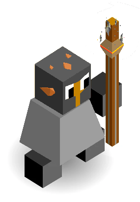
The Smokter
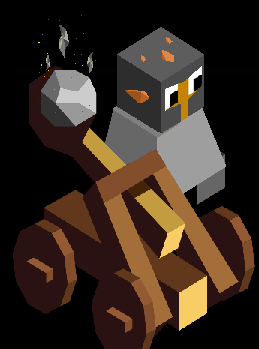
The Smoke Catapult
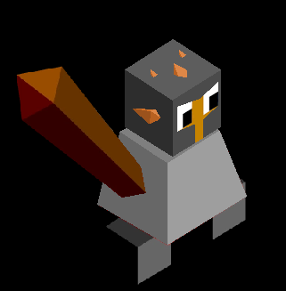
A Symokna Warrior
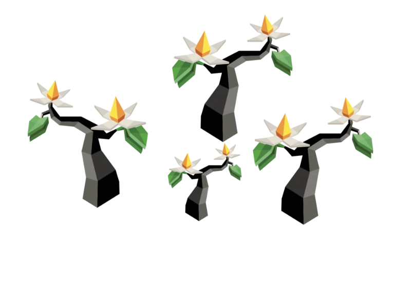
They live near Yadakk and so have the Kahlee trees
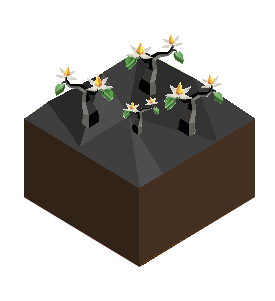
Full Picture
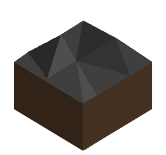
Their Land
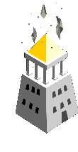
Smoke above the mountain temple
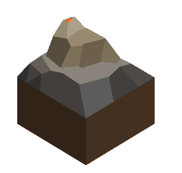
Mountain
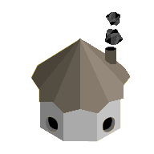
Smoke House
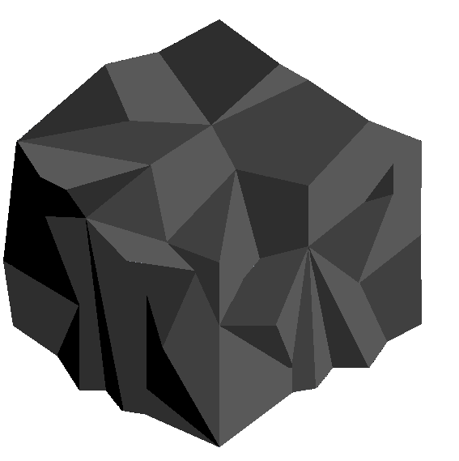
Smoke that covers the 3x3 radius
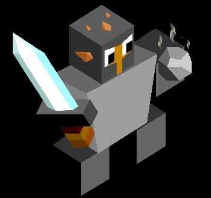
The Billower
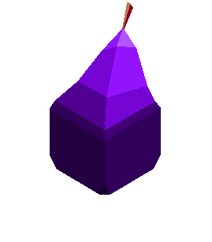
Sprite for the fruit